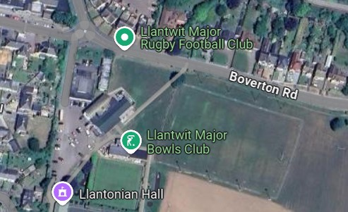

LLANTONIAN BRIDGE CLUB
Introduction:
The Bridge Club was founded on dd/mmm/yyyy as the Monday Night Bridge Club, the first Director being Derek Branch. The Club continues to meet in the Llantonian Hall. The aim of the club is to provide a regular facility for Duplicate Bridge allowing all pairs to play the same boards over the course of the evening. Ideally people attend in pairs although every attempt is made to cater for those without a regular partner.
Committee
Chairman: Allan Evans
Treasurer: Andrew Leonard
Secretary: Meryl Phillips
Scoring: Andy Dick

The Llantonian Hall is situated at the far end of the Car Park it shares with the Rugby Club. Access is directly off the roundabout passed the surgery.
Fees are paid annually in January. There is no Table charge for members, however, visitors pay £4 for each session.
The club meets on Monday evenings at 6.45, with play starting at 7.00 and aiming to finish by 10.00. There are also two party evenings each year.